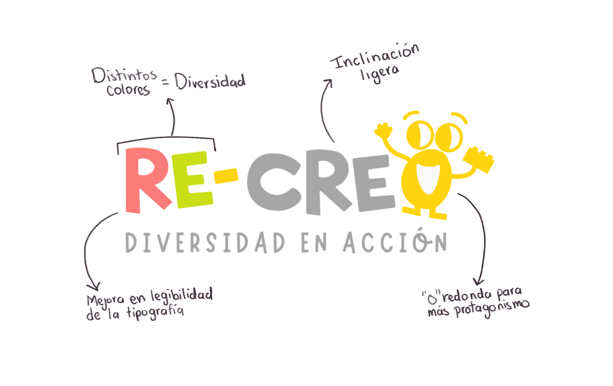
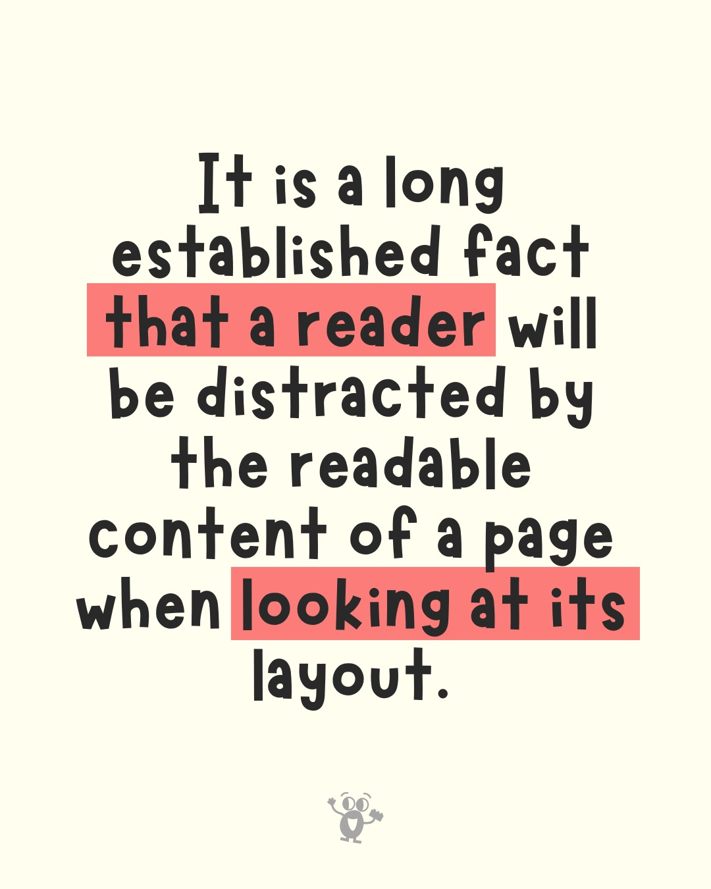
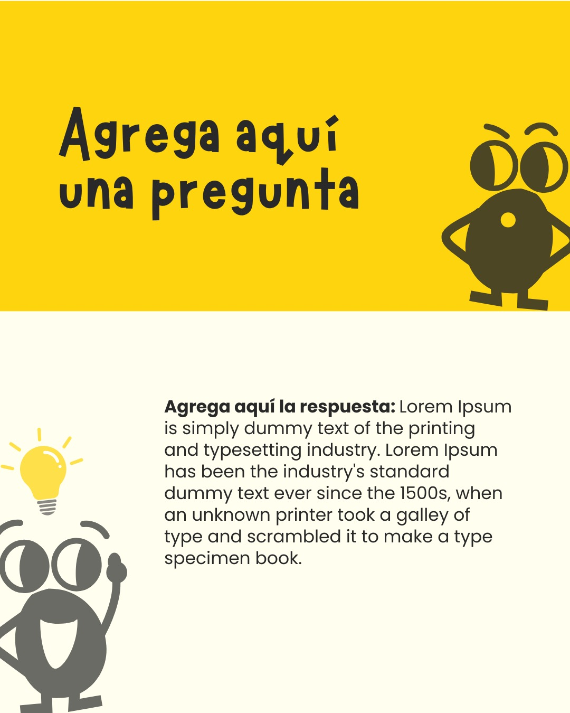
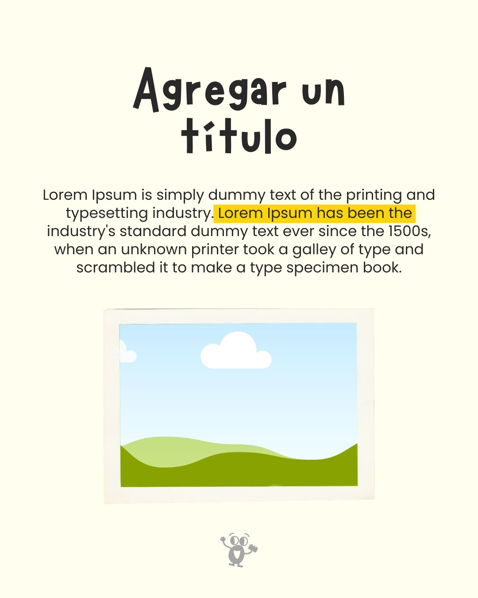
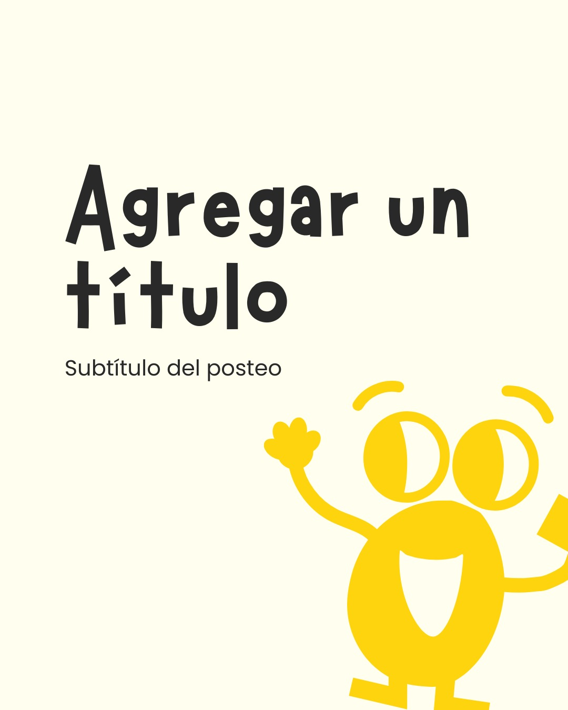
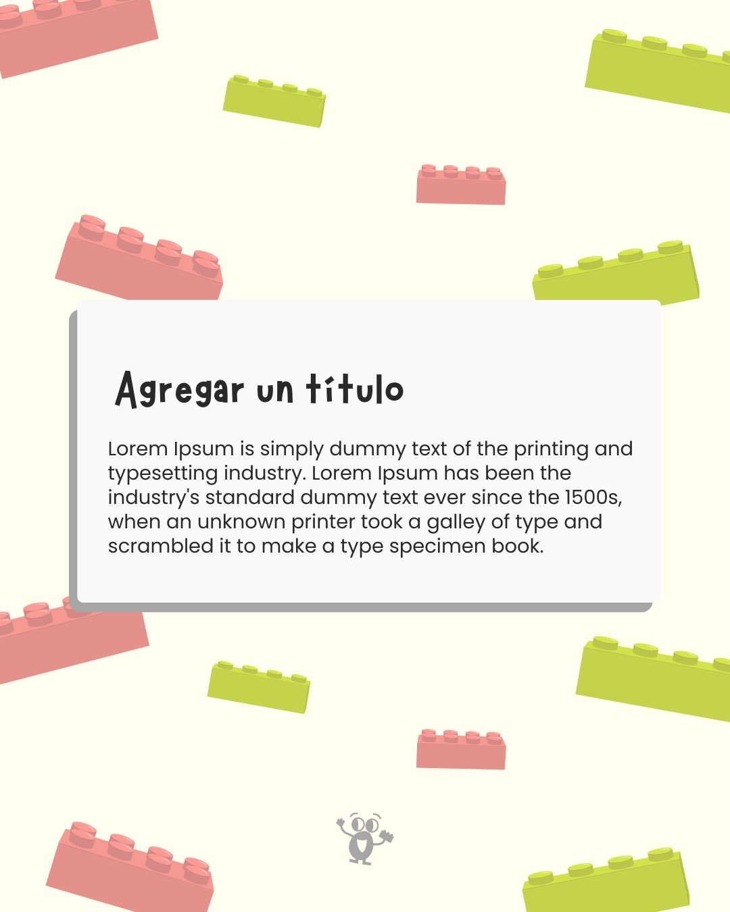
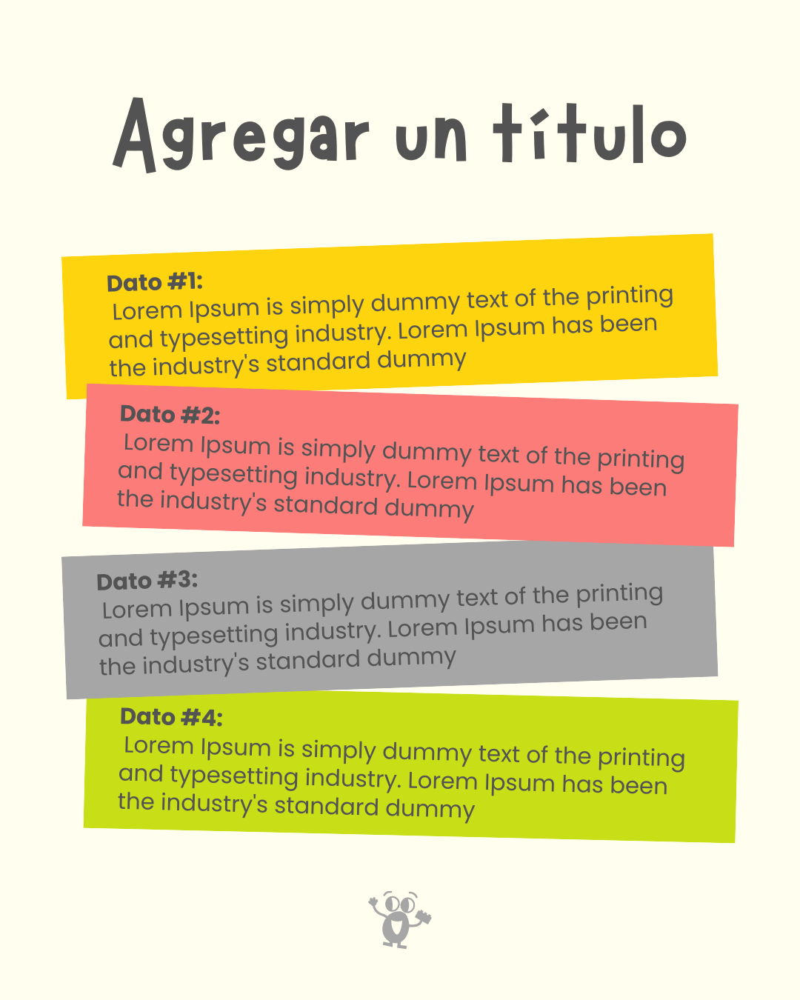

Contexto
¿Qué es Re-Creo?
Club terapéutico grupal para niños y adolescentes
Trabaja las habilidades sociales a través del juego con foco en la Terapia Basada en LEGO. A diferencia de la terapia individual, propone un formato grupal donde los chicos juegan, hablan y se relacionan con otros como forma de intervención no convencional.
¿Qué necesitaban?
Identidad visual desde cero para redes sociales
El espacio comenzaba a construir su presencia digital y necesitaba diferenciarse de otros espacios terapéuticos de la zona, que en su mayoría tienen una comunicación visual seria, clínica y poco memorable para el público al que Re-Creo se dirige.
El Desafío
La tensión central del proyecto
Transmitir el juego como herramienta terapéutica sin que la identidad se vea demasiado infantil. Re-Creo trabaja con chicos, pero su comunicación también debe generar confianza en los padres y en profesionales que derivan pacientes. Una identidad demasiado lúdica podría generar desconfianza. Una demasiado seria no reflejaría la esencia del espacio.
Audiencia 1 — Padres
Buscan confianza y profesionalismo. Necesitan sentir que el espacio es serio antes de llevar a su hijo.
Audiencia 2 — Profesionales
Derivan pacientes. Evalúan la propuesta desde un criterio clínico antes de recomendar.
Insight
Recreo
Ese momento del colegio donde los chicos se sueltan, juegan y se relacionan libremente. Movimiento, encuentro, vínculo.
Re-crear
Volver a crear, construir de nuevo, transformar. La terapia como proceso de reconstrucción de habilidades a través del juego.
Esa doble lectura no fue solo un recurso conceptual, se convirtió en el hilo conductor de cada decisión de diseño, desde la tipografía hasta la forma del personaje.
Decisiones de diseño
Se redujeron las curvas excesivas para lograr una estética más estructurada. La referencia era el LEGO, construcción, piezas que encajan, estructura que sostiene.
Representan el movimiento y el juego sin ser agresivas. La inclinación le da dinamismo al conjunto y conecta con la energía del recreo.
Representa la diversidad de los chicos que forman parte del espacio. Rompe la monotonía sin caer en el caos visual.
Forma deliberadamente más pronunciada que el resto de las letras para darle protagonismo al personaje integrado en el logo, dándole vida y reconocibilidad a la marca más allá del logotipo.

Aplicación de la identidad
6 plantillas para Instagram
Sirven como guía de uso de elementos pertenecientes a la identidad visual






Carrusel de 4 slides
Primera pieza lista para publicar desde el día uno

Resultados
Un sistema de identidad visual simple, flexible y fácil de usar en redes sociales. El personaje de la "O" le da vida a la marca y la hace reconocible más allá del logo, puede aparecer en distintos contextos adaptándose sin perder coherencia. La identidad refleja lo que Re-Creo realmente es: un espacio donde el juego es una herramienta terapéutica, con la seriedad profesional que eso requiere y la calidez que lo hace diferente.